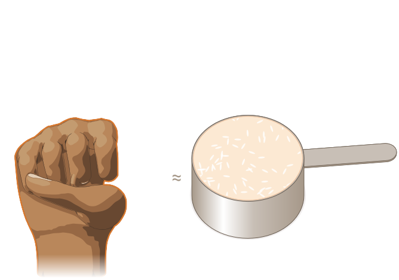
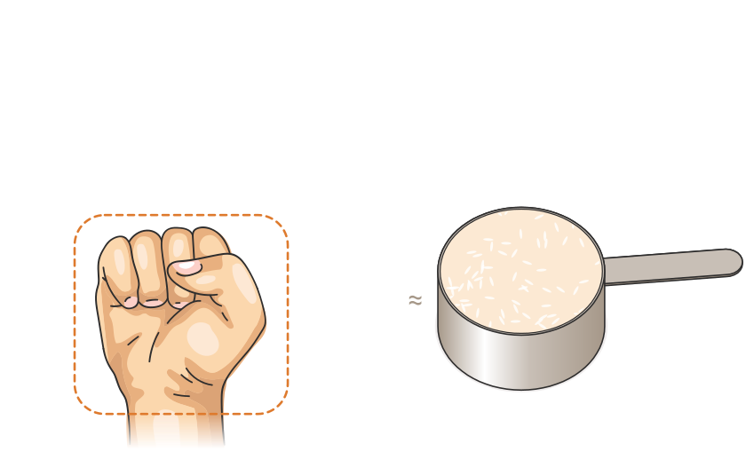
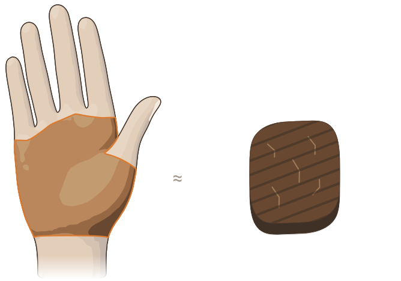
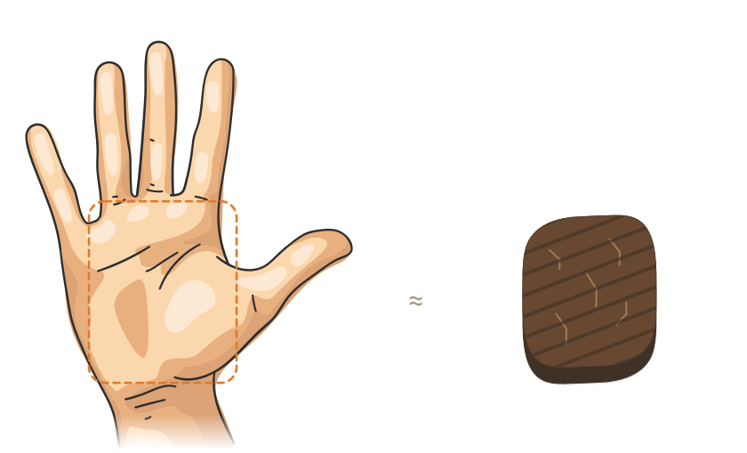
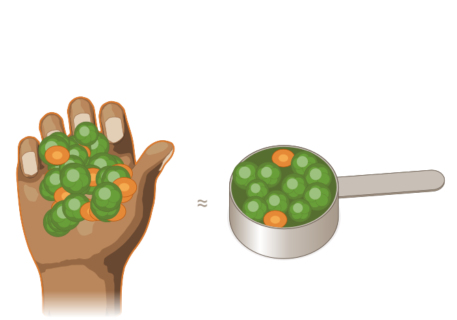
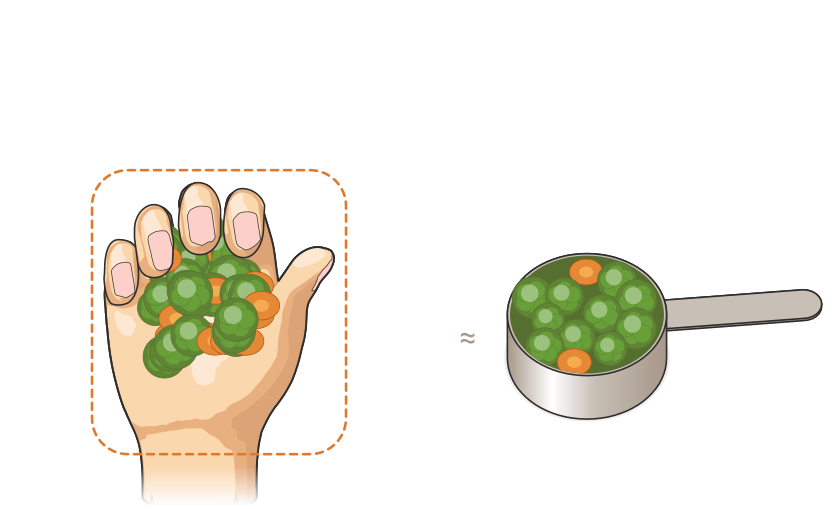
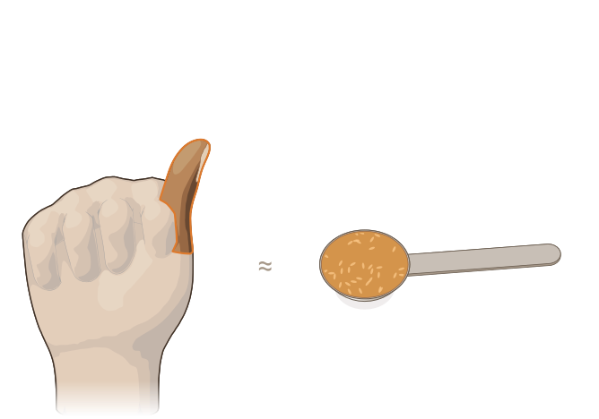
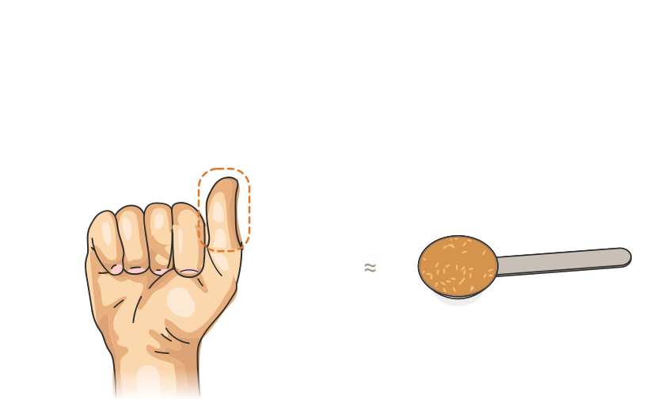

Reference style: fist and palm copied from AdobeStock_418107399, mirrored to a right hand and scaled to real size; thumbs-up is that fist with the thumb raised (pose from AdobeStock_663743938); cupped keeps the Blender pose, recoloured. Same tools, same scale. Measures marked with the reference’s dashed callout in our orange.







